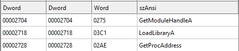
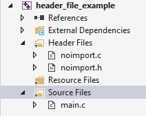

# Dynamically Import Functions
https://docs.microsoft.com/en-us/windows/win32/dlls/using-run-time-dynamic-linkingYou can dynamically import functions by:
• creating a typedef of the function
• loading the DLL that contains the function you want with
LoadLibraryA• and grabbing the address of the function in the DLL with
GetProcAddressBy dynamically importing functions this way, the only functions that will show up in your PE's imports are
LoadLibrary /
GetModuleHandle and
GetProcAddressIn my examples:
•
t_Function - means typedef
•
d_Function - means dynamic. This is the actual function call
The typedef format is like this:
typedef RETURN_VALUE(__stdcall* t_FunctionName)(PARAMETERS);## Examples
Grab
MessageBoxA from
User32.dllUser32.dll isn't loaded into the binary by default, so we have to load it with
LoadLibraryA#include <stdio.h>
#include <Windows.h>
// typedef of functions
typedef int(__stdcall* t_MessageBoxA)(
HWND hWnd,
LPCSTR lpText,
LPCSTR lpCaption,
UINT uType
);
int main(void)
{
// load User32.dll and grab address of MessageBoxA in User32.dll
t_MessageBoxA d_MessageBoxA = (t_MessageBoxA)GetProcAddress(LoadLibraryA("User32.dll"), "MessageBoxA");
// use dynamically imported Beep
d_MessageBoxA(NULL, "hey :)", "much title", MB_OK);
return 0;
}
If the function you want is stored in
Kernel32.dll, you can use
GetModuleHandle instead of
LoadLibrary.
Kernel32.dll is loaded automatically into a program's address space on startup, which means that you don't need to load it into your program with
LoadLibrary#include <stdio.h>
#include <Windows.h>
// typedef of functions
typedef BOOL(__stdcall* t_Beep)(DWORD dwFreq, DWORD dwDuration);
int main(void)
{
// grab address of Beep in Kernel32.dll
t_Beep d_Beep = (t_Beep)GetProcAddress(GetModuleHandleA("Kernel32.dll"), "Beep");
// use dynamically imported Beep
d_Beep(1000, 1000);
return 0;
}
## Real-world / Useful example
If you're doing this in a larger program, you don't want to be using
GetProcAddress in every function where you need an import.
Therefore, the best solution I can think of is to store your imports and function typedefs in a header and write a function to resolve all your imports at the start of the program.
This is reversible because it's a little obvious.
But your imports will be reversed at some point soon ayway so what does it matter.
I'm not smart enough to figure out how to put this into loop.
### Example
There are 3 files:
•
noimport.h•
noimport.c•
main.c noimport.hStores our function typedefs, our hashed functions, and the functions we've written in
noimport.c#pragma once
#include <Windows.h>
#include <winternl.h>
// my functions
ULONG hash(char* str);
LPVOID FindLoadedDLLBaseAddress(const wchar_t* dll_name);
LPVOID FindExportedDLLFunctionAddress(LPVOID dll_base_address, ULONG hashed_requested_function);
int ImportFunctionsByHash(void);
// hashed functions
#define hashed_Beep 1310994705l
// function typedefs
typedef BOOL(WINAPI* t_Beep)(DWORD dwFreq, DWORD dwDuration);
t_Beep d_Beep;
Contains all the functions we need to find DLL base addresses, grab exported functions, import the functions, etc.
It's where all the leg work for importing by hash is done.
#include "noimport.h"
#include <stdio.h>
#include <Windows.h>
#include <winternl.h>
/*
djb2 hash algorithm by Dan Bernstein.
Hash length is longer for longer strings.
*/
ULONG hash(char* str)
{
ULONG hash = 4725; // original from djb2 code is 5381
int c;
while (c = *str++)
hash = ((hash << 5) + hash) + c; // hash * 33 + c
return hash;
}
/*
Grabs PEB,
grabs PED_LDR_DATA from PEB to get info about loaded DLLs,
and loops through the loaded DLLs to find the DLL we want and grabs its base address.
Be careful. The DLL name has to be exact (could use something else than strcmp tbf)
e.g: "C:\\Windows\\System32\\KERNEL32.DLL" vs "C:\\WINDOWS\\System32\\KERNEL32.DLL"
Return:
NULL on error.
*/
LPVOID FindLoadedDLLBaseAddress(const wchar_t* dll_name)
{
PPEB p_peb = NULL;
PLIST_ENTRY dll_list = NULL;
PLIST_ENTRY dll_entry = NULL;
LPVOID dll_base = NULL;
// grab PEB
#ifdef _WIN64
p_peb = (PPEB)__readgsqword(0x60);
#else
p_peb = (PPEB)__readfsdword(0x30);
#endif
// grab list of loaded DLLs
dll_list = (PLIST_ENTRY)&p_peb->Ldr->InMemoryOrderModuleList;
// grab first DLL in list of DLLs
dll_entry = dll_list->Flink;
//printf("peb @ 0x%p \n", p_peb);
//printf("dll list @ 0x%p \n", dll_list);
//printf("dll entry @ 0x%p \n", dll_entry);
//printf("[*] looping through loaded DLLs... \n");
// loop through loaded DLLs
while (dll_list != dll_entry)
{
// grab DLL
PLDR_DATA_TABLE_ENTRY module = CONTAINING_RECORD(dll_entry, LDR_DATA_TABLE_ENTRY, InMemoryOrderLinks);
//printf("\t %ws @ 0x%p \n", module->FullDllName.Buffer, module->DllBase);
// if DLL found, save address & exit
if (wcscmp(dll_name, module->FullDllName.Buffer) == 0)
{
dll_base = module->DllBase;
break;
}
// increment to next DLL
dll_entry = dll_entry->Flink;
}
return dll_base;
}
/*
Find the address of an exported function from a DLL.
Only tested with a DLL already loaded in memory.
*/
LPVOID FindExportedDLLFunctionAddress(LPVOID dll_base_address, ULONG hashed_requested_function)
{
LPVOID function_address = NULL;
PIMAGE_DOS_HEADER dos_header = NULL;
PIMAGE_NT_HEADERS pe_header = NULL;
PIMAGE_EXPORT_DIRECTORY export_directory = NULL;
DWORD* export_dir_names = NULL;
WORD* export_dir_ordinals = NULL;
DWORD* export_dir_functions = NULL;
// grab export directory from DLL
dos_header = (PIMAGE_DOS_HEADER)dll_base_address;
pe_header = (PIMAGE_NT_HEADERS)((DWORD_PTR)dll_base_address + dos_header->e_lfanew);
export_directory = (PIMAGE_EXPORT_DIRECTORY)((DWORD_PTR)dll_base_address + pe_header->OptionalHeader.DataDirectory[IMAGE_DIRECTORY_ENTRY_EXPORT].VirtualAddress);
//printf("\t exports @ 0x%p \n", export_directory);
export_dir_names = (DWORD*)((DWORD_PTR)dll_base_address + export_directory->AddressOfNames);
export_dir_ordinals = (WORD*)((DWORD_PTR)dll_base_address + export_directory->AddressOfNameOrdinals);
export_dir_functions = (DWORD*)((DWORD_PTR)dll_base_address + export_directory->AddressOfFunctions);
// loop through exports
// if requested function found, save address & exit
for (DWORD i = 0; i < export_directory->NumberOfNames; i++)
{
// grab function name
char* function_name = (char*)((DWORD_PTR)dll_base_address + export_dir_names[i]);
//printf("\t\t %s \n", function_name);
// compare hashed function name to hashed requested function. if correct, save address and exit
if (hash(function_name) == hashed_requested_function)
{
function_address = (LPVOID)((DWORD_PTR)dll_base_address + export_dir_functions[export_dir_ordinals[i]]);
printf("[+] imported %s @ 0x%p \n", function_name, function_address);
break;
}
}
return function_address;
}
/*
Imports functions by hash.
Returns:
0 on no errors.
>0 on failed import. Number indicates which import failed.
*/
int ImportFunctionsByHash(void)
{
int import_number = 0;
LPVOID kernel32_base_address = NULL;
// grab kernel32.dll base address
kernel32_base_address = FindLoadedDLLBaseAddress(L"C:\\Windows\\System32\\KERNEL32.DLL");
// import functions by hash
d_Beep = (t_Beep)FindExportedDLLFunctionAddress(kernel32_base_address, hashed_Beep);
if (d_Beep == NULL)
return 1;
return import_number;
}
This is where our main program code will go.
We first import the functions we want by hash, and then proceed as normal.
#include <stdio.h>
#include <Windows.h>
#include "noimport.h"
int main(void)
{
int error_number = 0;
error_number = ImportFunctionsByHash();
if (error_number > 0)
{
printf("[-] failed to import by hash: %d \n", error_number);
return 1;
}
d_Beep(1000, 2000);
return 0;
}